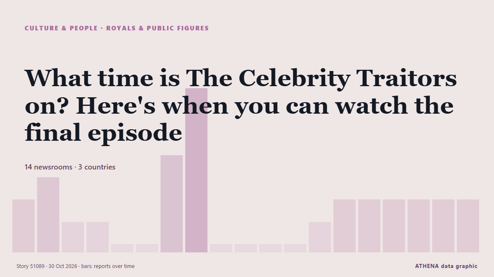

What time is The Celebrity Traitors on? Here's when you can watch the final episode

Here is the exact time The Celebrity Traitors 2026 final is on tonight. από The Scotsman
Αναφέρθηκε ανεξάρτητα από 14 μέσα σε 3 χώρες από τις 29 Οκτ, πρώτο το Irish Independent· η κάλυψη κορυφώνεται. Τα αθλητικά και τα πολιτιστικά καταχωρούνται χωρίς εκτίμηση κινδύνου. Βεβαιότητα 86% (υψηλή): το επιβεβαιώνουν 14 ανεξάρτητα μέσα, μέση αξιοπιστία 69%. Μέσα ανά χώρα: Ηνωμένο Βασίλειο (24), Ιρλανδία (6), Ηνωμένες Πολιτείες (1). Κάλυψη: 29 Οκτ έως 30 Οκτ, 38 ώρες.
Τι άλλαξε: 24 νέες αναφορές από 11 μέσα στο 24ωρο έως 30 Οκτ.
Πρώτη διατύπωση: One murdered and one banished in Celebrity Traitors penultimate episode
Οι τίτλοι των ειδήσεων παρουσιάζονται στα αγγλικά, όπως δημοσιεύτηκαν.
Με μια ματιά
Επιλέγεται, βαθμολογείται και γράφεται από τη δημοσιευμένη μεθοδολογία του ATHENA. Κανένας συντάκτης δεν παρεμβαίνει σε μεμονωμένα γεγονότα. Πώς παράγεται ›
| 29 Oct 06:45 UTC | 2 |
|---|---|
| 29 Oct 08:45 UTC | 3 |
| 29 Oct 10:45 UTC | 1 |
| 29 Oct 12:45 UTC | 1 |
| 29 Oct 14:45 UTC | 0 |
| 29 Oct 16:45 UTC | 0 |
| 29 Oct 18:45 UTC | 4 |
| 29 Oct 20:45 UTC | 7 |
| 29 Oct 22:45 UTC | 0 |
| 30 Oct 00:45 UTC | 0 |
| 30 Oct 02:45 UTC | 0 |
| 30 Oct 04:45 UTC | 0 |
| 30 Oct 06:45 UTC | 1 |
| 30 Oct 08:45 UTC | 2 |
| 30 Oct 10:45 UTC | 2 |
| 30 Oct 12:45 UTC | 2 |
| 30 Oct 14:45 UTC | 2 |
| 30 Oct 16:45 UTC | 2 |
| 30 Oct 18:45 UTC | 2 |
Γιατί αυτοί οι αριθμοί
Σημασία
Κίνδυνος
Βεβαιότητα
Η κάλυψη — ποιος το ανέφερε και πότε
ο τίτλος όπως δημοσιεύτηκε · ανοίγει το πρωτότυπο- Irish Independent · ΙρλανδίαComedian Joanne McNally faces banishment in Celebrity Traitors penultimate episode
- RTÉ News · ΙρλανδίαIrish eyes on Joanne McNally for Celeb Traitors reveal
- The Scotsman · Ηνωμένο ΒασίλειοThe Celebrity Traitors Episode 9: Here's the exact time penultimate episode will start tonight
- Irish Mirror · ΙρλανδίαCelebrity Traitors: All eyes on Joanne McNally ahead of penultimate episode
- TheJournal.ie · ΙρλανδίαCan Joanne McNally and the faithfuls turn things around as Celebrity Traitors heads for its finale?
- Evening Standard (London) · Ηνωμένο ΒασίλειοWho will win Celebrity Traitors? Fans give their verdict ahead of Friday’s finale
- The Scotsman · Ηνωμένο ΒασίλειοFinal Celebrity Traitors Odds 2026: Here are all 10 remaining celebs ranked according to their chance of winning - Maya Jama hot favourite to lead Traitors to victory
- Liverpool Echo · Ηνωμένο ΒασίλειοBBC Celebrity Traitors fans issue same complaint minutes into episode
- Manchester Evening News · Ηνωμένο ΒασίλειοCelebrity Traitors fans spot major problem for star moments into episode
- The Irish News (Belfast) · Ηνωμένο ΒασίλειοOne murdered and one banished in Celebrity Traitors penultimate episode
- Belfast Telegraph · Ηνωμένο ΒασίλειοOne murdered and one banished in Celebrity Traitors penultimate episode
- Irish Mirror · ΙρλανδίαCelebrity Traitors' Joanne McNally is out as one murdered and one banished
- WalesOnline · Ηνωμένο ΒασίλειοThe Celebrity Traitors finale start time and big change to last episode
- Liverpool Echo · Ηνωμένο ΒασίλειοWhat time is The Celebrity Traitors final on TV and who is in it
- Belfast Telegraph · Ηνωμένο ΒασίλειοCelebrity Traitors star banished after admitting to being traitor at roundtable
- Evening Standard (London) · Ηνωμένο ΒασίλειοCelebrity Traitors star banished after admitting to being traitor at roundtable
- Evening Standard (London) · Ηνωμένο ΒασίλειοBombshell at round table sparks chaos in Celebrity Traitors
- WalesOnline · Ηνωμένο ΒασίλειοMaya Jama responds to huge Celebrity Traitors moment ahead of final
- Irish Examiner · ΙρλανδίαTraitors Ireland winner Diego reacts to Joanne McNally’s exit from Celebrity spin-off
- The Scotsman · Ηνωμένο ΒασίλειοWhat time is The Celebrity Traitors on? Here's when you can watch the final episode
- Chronicle Live (Newcastle) · Ηνωμένο ΒασίλειοCelebrity Traitors final watch parties confirmed in Newcastle after huge drama on BBC show
- WalesOnline · Ηνωμένο ΒασίλειοMichael Sheen's 'fatal flaw' exposed hours before Celebrity Traitors final
- WalesOnline · Ηνωμένο ΒασίλειοCelebrity Traitor fans sent key message ahead of finale
- Belfast Telegraph · Ηνωμένο ΒασίλειοCelebrity Traitors semi-final attracts highest peak audience of series
- WalesOnline · Ηνωμένο ΒασίλειοCelebrity Traitors star's fate 'sealed' after slip-up that 'ruined the whole game'
- WalesOnline · Ηνωμένο ΒασίλειοTraitors viewers slam 'major flaw' with celebrity spin-off after history making series
- WalesOnline · Ηνωμένο ΒασίλειοMichael Sheen single-handedly saves The Celebrity Traitors - because of a massive mistake
- Liverpool Echo · Ηνωμένο ΒασίλειοBBC schedule shake-up for longest ever Celebrity Traitors final episode
- The Hollywood Reporter · Ηνωμένες ΠολιτείεςHow to Watch ‘The Celebrity Traitors’ Season Two Finale Online From the States
- Evening Standard (London) · Ηνωμένο ΒασίλειοOne more contestant murdered as Celebrity Traitors final begins
- Belfast Telegraph · Ηνωμένο ΒασίλειοOne more contestant murdered as Celebrity Traitors final begins